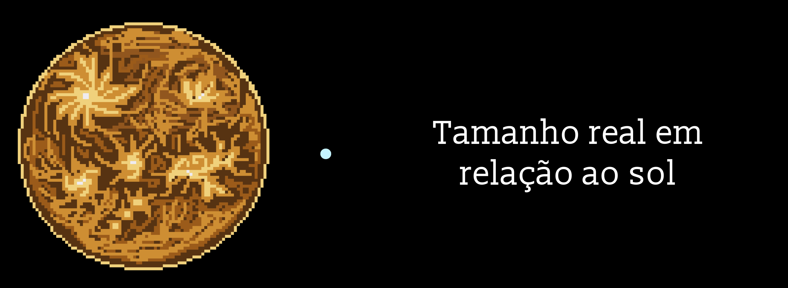

Urano
Urano: o planeta deitado
Urano é o sétimo planeta a partir do Sol e foi o primeiro a ser descoberto com um telescópio, pelo astrônomo William Herschel, em 1781. Até então, ninguém sabia que existia um planeta além de Saturno. Seu nome vem do deus grego do céu, pai de Saturno, e ele é o único planeta com nome de um deus grego em vez de romano. Em céus muito escuros, dá até para vê-lo a olho nu, como um pontinho bem fraco.
Um gigante de gelo
Urano não é feito só de gás, como Júpiter e Saturno. Ele é um gigante de gelo: por baixo de uma atmosfera de hidrogênio e hélio, tem uma grande camada de água, amônia e metano, pressionados de um jeito que não existe na Terra. O metano da atmosfera absorve a luz vermelha do Sol e reflete o azul, dando a Urano sua cor verde-azulada.
Um planeta que rola
A característica mais estranha de Urano é que ele gira deitado, com o eixo inclinado em quase 98 graus. Em vez de rodar como um pião, ele rola ao redor do Sol como uma bola. A hipótese mais aceita é que, há bilhões de anos, uma colisão gigante o derrubou de lado.
Verões e invernos de 42 anos
Urano leva 84 anos terrestres para dar uma volta no Sol. Como está deitado, cada polo passa cerca de 42 anos seguidos com o Sol no céu e depois 42 anos em total escuridão. Uma pessoa que nascesse no começo do inverno em um dos polos poderia passar metade da vida sem ver o Sol.

O planeta mais frio
Mesmo não sendo o mais distante do Sol, Urano tem a atmosfera mais fria do Sistema Solar, chegando a cerca de −224 °C. Os cientistas ainda tentam entender por que ele libera tão pouco calor de dentro, ao contrário dos outros gigantes. Há também a hipótese de que, lá no fundo, a pressão seja tão grande que o carbono do metano vire diamante e "chova" em direção ao centro do planeta.
Luas com nomes de teatro
Urano tem anéis escuros e finos e, desde a descoberta de uma nova lua em 2025, 29 luas conhecidas. Enquanto os outros planetas têm luas com nomes da mitologia, as de Urano homenageiam personagens de William Shakespeare e Alexander Pope, como Titânia, Oberon, Ariel e Miranda. Miranda tem um dos maiores penhascos conhecidos do Sistema Solar, com cerca de 20 km de altura.
Uma única visita
Só uma sonda visitou Urano: a Voyager 2, da NASA, que passou por ele em 1986 e tirou as únicas fotos de perto que temos até hoje. Anos depois, os cientistas perceberam que ela chegou durante uma tempestade de vento solar incomum, o que pode ter dado uma impressão errada sobre o planeta. Por isso, uma nova missão para orbitar Urano foi apontada pelos cientistas americanos como uma das grandes prioridades para as próximas décadas, mas ainda não tem data para sair do papel.
Deitado, gelado e visitado apenas uma vez, Urano é um dos planetas que menos conhecemos e, justamente por isso, um dos que mais têm surpresas a revelar.